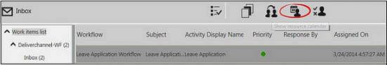
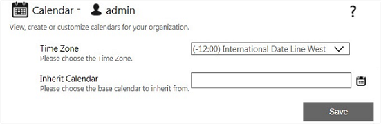
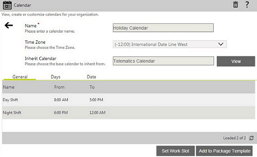
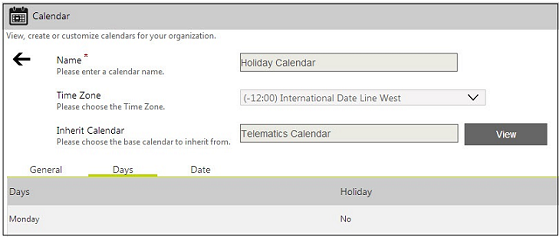

No
Configuring a Resource Calendar
Configure a resource calendar by inheriting the settings of a specified top-level calendar. A resource calendar is the lowest level calendar that you can create and it cannot have a child-calendar.
See Configuring Resource Calendar by Administrator for more details.
You must select the time zone for the resource in the Time Zone drop down. You also need to select the top-level calendar from which this resource calendar is to inherit properties in the Inherit Calendar field.
You can access the Resource Calendar feature from the Inbox.

On clicking the icon, the Resource Calendar screen opens.

After configuring the settings, you can click the Save button to save the resource calendar. This displays the configuration window below the above one. You can configure the calendar using the same steps described for configuring the Calendar Control.

You can click on the View List button to return to the Calendar List view.

For more information about configuring Resource Calendars from the Work items list window. see Work Items List